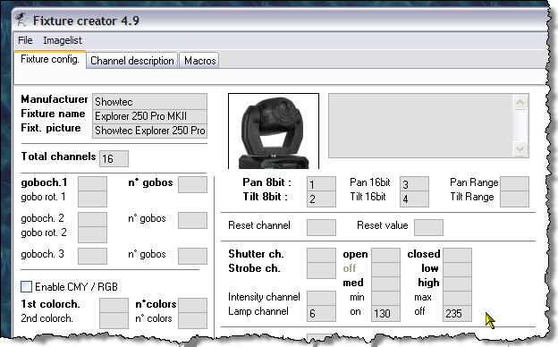
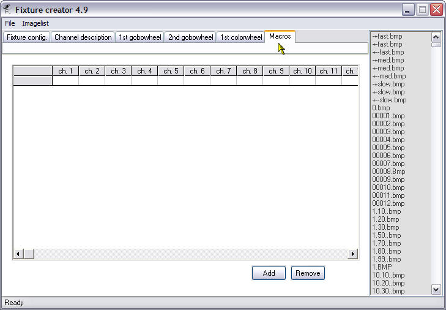

Table of Contents

Fixture Creator Tutorial - Moving Head
This tutorial is the first part in a series I am proposing to do on the Fixture Creator in FreeStyler. I intend to do a tutorial for each type of profile available when you first start the Fixture Creator. They will be “Parcan, dimmer,…”, “Fogger-Hazer”, Scan/Movinghd.“ and “Other”. This tutorial is for a Moving Head.
Hopefully this tutorial will enable new users of the FreeStyler Fixture Creator to gain enough information to be able to create their own fixtures and maybe give some other users some extra information on the Fixture Creator. I am not claiming this is the best way or the easiest way to create fixtures but it works for the purpose of this tutorial.
I would like to suggest to new users of lighting control software that they do their homework on how DMX and lighting fixtures work, this will make understanding this tutorial much easier.
The fixture I am going to create is a Showtec Explorer 250 Pro MKII, it is a moving head, I am going to use in 16 channel mode as that is the only mode the manual shows you about.
To get the manual and other information on this lighting fixture the please visit
Showtec Explorer 250 Pro MKII Info
The pdf manual for this fixture has been uploaded to this site can be found hereShowtec Explorer 250 Pro MK 11 - Manual
The reason I have chosen this fixture is because it has an extensive range of features which hopefully will show the most of what the Fixture Creator can and cannot do.
Problems with using this fixture as an example is I do not have one, so it is untested and the manual does not show what the actual gobos are, so I have used numbers for them instead.
TODO: Resize the .gif image of the fixture so it fits better into the Fixture Creator.
I would appreciate any comments good or bad, if they are bad then make sure it is constructive so I can make the required changes to improve it.
I did start to do a video tutorial but I ended up needing to talk far to much to explain things so was not really practical as the file size was getting huge.
This tutorial is also available in a pdf format. Fixture Creator Tutorial - Moving Head
Let us get started
Start the Fixture Creator program, there should be an icon on your desktop if you did a standard install of FreeStyler.
You should be presented with a screen similar to the one below.
As we are going to create a fixture for the Showtec Explorer 250 Pro MKII moving head go ahead and press the “Scan / Movinghd.” button on the “Create new profile” dialogue that is showing in the middle of the Fixture Creator.
So hopefully you have obtained a copy of the manual and have located the DMX Protocol within it. As you can see it has 16 channels and covers nearly all the features on the “Fixture config.” tab of the Fixture Creator as shown in the above image.
Fixture config. tab
Right now we begin to fill in the values on this screen, the “Fixture config.” tab. Start with the “Manufacturer” as we know this is a Showtec fixture we put in “Showtec” as seen in the picture below.
Please ensure you spell the Manufacturer correctly as this is used to organise the fixtures into manufacturers within FreeStyler. Now for the “Fixture name” so enter the data as below.
Each fixture name needs to be unique and you will discover this if you try to save a fixture with the same name.
Above is the image of the Showtec Explorer 250 PRO MK11. This needs to be copied to the FreeStyler/Fixtures folder so you can then select it in the next part of this tutorial.
Click into the “Fixt. picture” input box and then the picture is chosen from the list on the right hand side of the Fixture Creator. The name is pulled into the input box and the picture of the fixture is displayed to the right of the name. As mentioned I need to adjust the size of the picture, currently it is at 100×100 an ideal size would be 60×60. The grey input box to the right of the fixture picture is a comment box. Normally I put information such as fixture name, fixture version, mode, number of channels, fixture file version, created by, date created and tested or not. I am not going to bother with that in this tutorial. As I have mentioned it is a 16 channel fixture so we need to put 16 in the “Total channels” input box, as shown below.
Looking at the manual we see that it shows the first 4 channels as defined for pan and tilt. Well actually we have two channels for Pan and two channels for Tilt. This is called 16bit movement, the reason for this is each DMX channel can only have 256 values from 0 – 255. This fixture can pan 580° which means 580 ÷ 256 = 2.265. That is 2.265 degrees for every value on one DMX channel, it does not sound a lot but when you see it in action you will be surprised how big the jump is between each value, now using the other channel associated with Pan on this fixture we can have 256 values for every value on the first Pan channel. This is why most of the time the other channel is called “Fine”. The same principle applies to the Tilt channel as well.
Please note not all fixtures have 16bit movement channels.
Now that has been explained a bit we can enter the values for the Pan and Tilt channels as shown in the picture below.
You would normally put the degree values of the Pan and Tilt of the fixture into the Pan/Tilt Range input boxes, I have left them empty.

In the manual it states that the “lamp channel” is 6. The “on” value is between 128 & 139 and the “off” value is between 230 & 239 so I have chosen values of 130 & 235 respectively. I always use mid values to ensure a “safety margin” to get the function required.
The “Intensity channel”, otherwise known as the “dimmer” channel is on channel 16 and its values go from 0 to 255. Enter them as shown above.
Some fixtures have the dimmer channel shared with the strobe channel or some other feature, you would still put the range of the dimmer in these input boxes as it is defined in the manual.
This fixture uses the same channel for the shutter and strobing, which is quite common to a lot of fixtures as it is the mechanical shutter that opens and closes causes the strobing effect. Anyway enter the “Shutter ch.” values and “Strobe ch.” values as shown above and below.
Did you notice that you could not enter a value in the “off” value for the “Strobe ch.” That is because the Fixture Creator knows that the strobe channel is shared with the shutter channel.
While looking at the manual and this part of the Fixture Creator I noticed that the manual mentioned that the “Reset” was on the same channel/value as the “Lamp On” so I have added that here as well. As I do not have the real fixture to test this I am assuming that doing a lamp on and a reset will do the same thing.
In the above picture I have entered the channel numbers for the Prism and Prism rotation as well as the Focus channel. These will give you sliders you can control them with in FreeStyler (not the ones on the right of the screen).
Here I have told the Fixture Creator that it has its colour channel on 7 and that we have 18 colours. If you look at the manual you might be a bit confused by this as it only mentions 8 colours and a rainbow effect. Well what I have done here is allowed for split colours and 3 rotation speeds for the rainbow effect. Not all fixtures allow for split colours as their colour wheels are indexed, what that means is if you select any of the values allowed for that colour it will always show the whole colour. This colour wheel is not indexed so selecting values near the beginning or the end of its range will allow the previous or next colour to appear as well. Check your manual or do a simple test of moving the slider from value to value and see what happens on the real fixture.
Right now onto the gobo wheels, this fixture has 2 gobo wheels and one of them has rotating gobos. The first gobo wheel is the static gobo wheel, static in the sense that the gobos do not rotate but obviously the wheel that the gobos are on does, otherwise you would not be able to select the gobos. So that uses channel 8 and has 7 gobos on it.
The second gobo wheel is on channel 11 has 9 gobos and the gobo rotation channel is 12 as can be seen in the above picture. You might be wondering why I have entered 9 as the number of gobos on this channel when it has only six physical gobos and a wheel rotation speed. Well the others are for differing gobo wheel rotation speed of slow, medium and fast. All will be revealed soon.
The above image shows the finished definition of the “Fixture config.” tab. Some of you might have noticed that 2 channels have not been defined and these are channels 5 and 13. I will not define channel 5 as it is used for Pan/Tilt speed in Vector mode and as the manual does not say how to get it into Vector mode and you will most probably never use it in Vector mode because you will be controlling the speed the fixture moves at within FreeStyler using fade times. Channel 13 is not being defined here as it has a multitude of functions. I could define it on a gobo channel, but that might be a bit confusing to start with, so I will define using the “Macro” tab in a later part of this tutorial.
Channel description tab
Clicking the “Channel description” tab brings up the above screen. See how the Fixture Creator has labelled each of the channels with information from where and what we entered on the “Fixture config.” tab. Those of you astute enough might have noticed that channel 13 is defined as “Zoom” even though I did not define it on the “Fixture config.” tab. Well confession time, I did put 13 in the “Zoom” field but removed it when I realised it was more than just a zoom control. It leaves behind the description though once it has been entered. This is fine as that is what its primary use is.
For information on the Locate and Default Values please see this tutorial Fixture Creator - Channel Description Tab
1st gobowheel tab
The “1st gobowheel” tab, empty at the moment, but we are going to fill it in now. Notice that it has the same amount of rows as the number of gobos we said this wheel had on the “Fixture config.” tab.
Right we put in a DMX value in the first column which we get from the manual. For this we are going to use a value of zero and then we use the list to the right and find an appropriate icon for the gobo. This is easy for this one as it is called Open or White, so I have clicked the “Open.bmp” in the list and it appears in the row and column to the right. When you are adding values you can use any of the empty rows as the Fixture Creator now automatically sorts them into numerical order. You cannot miss any out, all rows must be defined. You can only use numbers in the DMX value field and that only the “Backspace” key can be used to delete existing values. No need to use the “Enter/Return” key, just click in a new empty row to enter next gobo etc. When you do that you might notice the field you just defined jump to the bottom of the list, do not worry about it, it is just doing its auto sort. Continue on to define the rest of the fields.
Below is the finished “1st gobowheel” definition.

As I do not have the actual fixture and the manual does not define what the gobos look like I have used numbers 1, 2 and 3 and the colours it mentions in the manual. Yes I know this is a gobo wheel so what are colours doing on there. They are most probably some sort of filter which when used with gobo wheel 2 and the colour wheel gives some sort of other effect the same goes for the gobos 1, 2 and 3.
2nd gobowheel tab
The “2nd gobowheel” tab, empty at the moment but we are going to fill this in now.
Finished “2nd gobowheel definition”, notice the 3 wheel rotation speeds defined at the bottom, this is NOT gobo rotation but the speed the gobo wheel rotates, going from Open to 1 to 2 to 3 to 4 to 5 and back to open again. Remember I mention this earlier when defining the number of gobos!!!
1st colorwheel tab
This is the “1st colorweel” tab, it is empty at the moment but we are going to fill this in now.
This is the first part of the finished “1st colorwheel” notice how I have used split colours and the values for them, look at the manual and see how I got the values I used above.
Here is the second part of the finished “1st colorwheel” tab. Again notice the split colours and values and the three rainbow effect speeds at the bottom, check the manual to see how I got those values.
You do not have to enter the values for ones you have already. i.e. there is only one value of 72.
Macros tab

The “Macros” tab, empty but as was explained earlier I will be using this to define the functions on channel 13 which in the manual is defined as the “Zoom, Frost and UV Filter” channel. Macros are single shot values for defined channels, i.e. any channel defined can only have one value at a time and what you define here on the macro tab will be applied to those channels. It will become clearer as we go on and with use.
Click the “Add” button and the first macro row will appear as shown above.
I have scrolled the window to the right so I can see the channel 13 column and the picture column as well. I have used a value of 0 in channel 13 and found a “Zoom 15°.bmp” icon in the list to the right.
Click the “Add” button again and repeat the above until you have defined all the values for channel 13 as defined in the manual.
On the next page you will see screen shots for all of the definitions of the macros for channel 13.
Other macros can be added for other channels and you can even have macros that use more than one channel at a time. So for example you could set the pan/tilt channels open the shutter set dimmer to max have open gobo channels and colour of white and a narrow zoom. This could be used to define the moving head pointing to a mirror ball or a person on stage. Macros are very easy way to enable functions you cannot easily create on other parts of the Fixture Creator and for creating single button looks “palettes”.
The above two images show all the macro definitions for channel 13 according to the manual.
Saving and Exporting
We are done all we need to do now is save our fixture file.
Go to “File>Save”
You should get the above dialogue if you have not already saved it.
I always add the Manufacturers name to the front of the file name as it make it easier to locate in the “Fixtures” folder, it is not needed to be able to use locate it in FreeStyler or Fixture Creator.
Click the “Save” button.
Whenever I create a new fixture I always export it at the same time to ensure I have a backup copy to re-install if and when I upgrade FreeStyler I always overwrite existing fixtures.
Select “File>Export”
Click the “Save” button when you have navigated to a folder to keep your exports in.
The file that is created here has an extension of pff. This is the file that you would upload to the FreeStyler Support Forum for other to download or if you have problem with the fixture that you need help with. It contains everything the fixture needs, all the colours, gobos, icons and pictures, so is all you need to transfer to another system or for other to download and install on their system.
You can now close Fixture Creator and load the finished fixture file into FreeStyler to use.